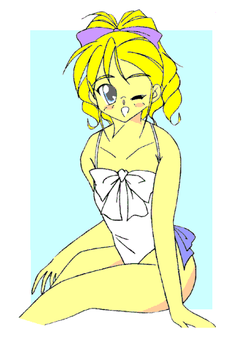
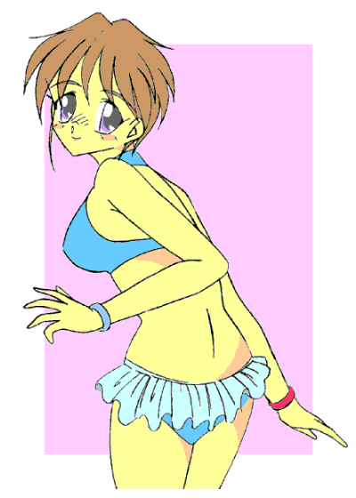
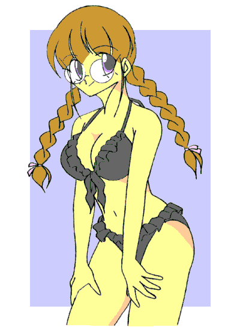

ここは都内の、とあるガード下。
商店街などの近道というわけでもなく、人通りもさほどないこの場所で、まるで印象の違う三人の『男』が立ち話をしていた。
一人はホストか舞台俳優を思わせる、華やかな印象の美青年。もう一人はローブを纏った、痩せぎすの老人。
そして最後の一人はスーツ姿の、役人風な男性。丸いメガネをかけているが、その奥から猟犬のような鋭い目つきが覗く。
「で、奴らの弱点がわかった今……残った僕ら三人で戦うのかい？」
何処か芝居じみた口調で、ホスト風美青年――秋野光平が尋ねた。
「いや、我々は出ない」
「ほぉ……我らでないというなら、誰がきゃつらを叩ける？ アヌよ」
今度はローブの老人――通称『プロフェッサー』がゆったりとした口調で問いただす。
「適任者がいる」
スーツ姿の男――アマッドネス六武衆を統べる死将アヌがとり憑いた私服警官、軽部は短くそう答えた。
「おいおいもったいぶらずに教えてよ。そろそろ僕たちの出番かと思って、確認のためにアヌを呼んだんだから」
「まさか……あの反逆者を差し向けるつもりか？ 危険すぎて六武衆に入れられなかった奴を」
だが、軽部は『プロフェッサー』のその言葉にも、首を横に振って否定の意を表した。「適材適所、そして『相性』というものがある」
「「…………」」
真夏の太陽の光が、容赦なく地面に降り注ぐ。
影はいっそうくっきりと浮かび上がり、深い闇を形成していた……
戦乙女セーラ Ｖｏｌ．８
作：城弾
六武衆の生き残り三体の密談から、二日経った。
夏休みのとある一日、時刻は正午を回ったばかり。
例によってアマッドネス出現の感覚をおぼえた清良は、Ｔシャツの上からジージャンを羽織り、バイクモードに転じたキャロルとともにそれを追跡していた。
（あの車の中にアマッドネスがいる……どういうつもりだ？ 変身したままで車に乗ってやがるのか？ 俺を誘い出しているのか……？）
敵はまだ何も行動を起こしていない。しかし車道である。ここで戦うわけにはいかない。
不思議には思うが、追跡しつつ様子見だ。
「……！？」
不意に「感覚」が交じり合った。清良は思わず「上」を見上げる。
「もう一体？ やっぱ待ち伏せか？ ……と！」
上空の気配に気をとられた隙に、追っていた方の気配が唐突に途切れた。
清良はキャロル・バイクモードを停車させると、ヘルメットを脱いで目を細めた。真夏の太陽がまぶしい。
そして路肩から、敵二体が入り込んだと思われる建物を見上げる。
中から水のはねる音と、子どもたちの楽しそうなはしゃぎ声が、風に乗って聞こえてきた。
「……プール？ なんでこんなとこに？」
−ＥＰＩＳＯＤＥ２９「水難」−
「高岩、どうして貴様がここにいる？」
「……！」
背後からいきなり声をかけてきたのは、清良と同じ戦乙女の転生者――伊藤 礼だった。
夏休みなので、縞の半そでシャツという私服姿だ。
「お前こそここで何してやがる？ ここはお前のエリアから離れているだろ？」
「貴様こそ……」
ぞろぞろとプールに入っていくお客たちに注目されるので、二人はとりあえず言い争いを中断して脇に寄った。
「よーするに、二人ともここにおびき出されたってわけか……」
「少しは頭を使え。奴らが俺たちを、わざわざひとところにそろえると思っているのか？」
清良はむっとしたが、確かに正論である。
分断して各個撃破というならわかるが……アマッドネスが、不仲とはいえ天敵の戦乙女を集結させる意図が見えない。
「あれぇ？ 二人ともどうしてここに」
「な……？」「押川まで？」
どうやら施設の周辺をぐるっと回ってきたらしい三人目の転生者――押川 順が、清良たちに駆け寄ってきた。
ゆったりした長袖のシャツ（おそらく日焼け対策）とスリムジーンズ、整った顔にメガネ……と、相変わらず変身しなくても女の子に見える。
「お前こそ、なんでここに？」
「えっと……空にアマッドネスの気配を感じてここまで来たんだけど」
「俺は車に乗った奴を追ってきた」
「こっちは車じゃなかった……高速で走っていた影を追跡してきた」
「「「…………」」」
顔を見合わせる三人。
「最低でも三体いると言うことか？」
「それが鉢合わせ？ 偶然？」
「いや、やっぱここで何か企んでやがるんじゃないか？」
上空には、まだアマッドネスの気配がある。
しかし――
「……降りたね」
「それも中だ」
明らかに誘いの罠。しかし、無視すればプールの客に対して何かを仕掛けられそうだ。
「どうする……？」
「ふんっ、臆病風にふかれたのなら帰れ。足手まといよりマシだ」
「誰がそんなこと言ったよっ？」
礼の言葉にカッとなって言い返す清良。と、その時――
「じゃあ、中で手分けしてさがしましょうよ」
「「！」」
唐突に聞こえてきた少女の声に振り返ると、いつの間にか順がジャンスに変わっていた。
いつものジャンバースカートではなく、肩と胸の谷間を大きく露出したサマードレス姿だ。
「なんでいきなり変身すんだよ？」
「ちっちっちっ……考えてみて。中でアマッドネスと遭遇したとして、いきなり男から戦乙女になったらまわりのお客さんが大騒ぎになるわ。その点エンジェルフォームなら水着にしておいても攻撃を凌げるし、お客さんが逃げてからキャストオフすればいいし……もし、連中が別の目的で集結していたとしても、あたしたちを見て諦めてくれたらそれでもよし。どっちに転んでも問題ないわよっ♪」
「ウソつけ……」
「貴様はただ女姿でいたいだけだろう」
人指し指を立てて得意気に説明するジャンスを、清良と礼はワニ目で見返した。
とはいえ彼女の主張も理解できる。二人が腕を組んでいると、
「もしもし番長？ あたし今ね、帝江州プールにいるの……すぐ来てくれないかな？」
可愛らしいストラップがじゃらじゃらついているケータイを耳に当てて、ジャンスが応援を要請していた。
相手はもちろん、彼女のパートナーである豪腕番長岡元だ。
「……まあヤツなら、援軍として頼もしいか」
「私の方で森本くんも呼んでおきました、ブレイザ様」
「友紀様もすぐ駆けつけてくださるそうですよ、セーラ様」
「「……何勝手なことしてるんだっ、おまえらっ」」
二体の遣い魔に声をそろえてつっ込む清良と礼。人間離れした戦闘力を持つ岡元ならともかく、友紀や要を危険な目に合わせたくはない。
「お怒りは重々分かりますが……犬のドーベルと猫の私はこの中に入れません」
「ですからお二人にご協力をお願いしたのですが」
「「…………」」
それはわかる。ウォーレンは空からサポートできるが、キャロルとドーベルをプールに連れていったら
“飼い主” もろとも係員につまみ出されるのがオチだ。
だが、女の子の姿で友紀と一緒にプール。清良としては、できることなら遠慮したい――というか御免被りたいシチュエーションだ……
「お待たせっ」
……などと逡巡していると、友紀と要、岡元がまとめて合流してきた。
岡元は相変わらずの学ラン、要は涼しげなワイシャツとスラックス姿、そして友紀はキャミソールとキュロットという格好で、手には大きなバックを下げている。
「おい、電話してからそんなに時間経ってないぞ？ なんでこんなに早く準備してこれるんだ？」
「え〜っと……ま、まあ、いわゆる『い○うえワープ』ということで」
「おい……」
時空間を飛び越えるといわれている……あれである（笑）。つっ込む気も失せる清良。
「任せてキヨシっ、キャロルちゃんの代わりにしっかりサポートしてあげるからっ」
「だめだ。ヤバイから帰れっ」
妙にはりきる友紀に、清良は間髪いれずに拒否の言葉をかけた。
「お願いキヨシ……罪滅ぼしがしたいのっ だってあたしは――」
「前にも言っただろっ。アマッドネスに操られてただけのお前に責任はねえっ。だから帰れっ」
「そんな……あたしだって力になりたいのに……」
「…………」
友紀はしかられた仔犬のようにしょげ返った。彼女の罪の意識はか〜な〜り深いようだ。
逆に、清良の方が罪悪感に囚われてしまう。
そんな二人を要ははらはらしながら見つめ、礼は「我関せず」とそっぽを向きつつ横目でちらちらと様子をうかがい、ジャンスと岡元はため息をつきながら、生暖かい目を向けてくる。
「セーラ様、ここは友紀様にお願いした方がよろしいかと――」
「はああ……わかったよっ、頼む」
キャロルに促されて、仕方ない……というポーズを取る清良。友紀に泣かれるのは苦手だ。
「うん、ありがとキヨシ。ほらっ、もし戦いになってもいいように、ちゃんと道具もそろえてきたからっ」
一転、得意気な笑顔を浮かべると、友紀は手にしたバッグを開いた。
「あ、いや……場所がプールだから、むしろマーメイドフォームの方がありそうなんだが――」
バックの中には、新体操で使うクラブやリボン、ボールなどがきっちり詰め込まれていた。
「どうやら話がまとまったみたいね。それじゃあ二人とも、変身、変身っ！」
「「…………」」
やたら嬉しそうなジャンスに文字通り背中を押され、清良と礼は（しぶしぶ）物陰に隠れると、セーラとブレイザに変身した。
「考えてみたら、“セーラちゃん”
を間近で見るの、あの時以来よね」
「ちゃん付けで呼ぶな……」
セーラはキャミソールにデニム地のミニスカート、足元はサンダルというアクティブな格好――友紀の服装を参考にしたらしい。
一方、ブレイザは真っ白なワンピース姿。エンジェルフォームの能力を使えば一瞬で水着姿になれるのだが、「目立つのはまずい」とジャンスが主張して、二人とも私服姿を強要されたのである。
そして、岡元と森本を残して女子更衣室へと向かう。
ウォーレンは空から、キャロルとドーベルは施設の周辺を警戒している。
「「…………」」
あたりまえだが女子更衣室の中は、着替え中の女性でいっぱいだった。
もちろんタオルで隠しながら着替えているのだが、精神がまだ男のままだったセーラとブレイザには刺激が強すぎた。目のやり場に困って足元を見たり、そうかと思うと天井を見上げてそわそわしたりする。
硬派の清良と潔癖な礼――性的好奇心を満たすために女の子に変身したことなど、一度もない。
（さっさと出て行こう……）
端の方で背を向けて、ブレイザはこそこそと着替えるふりを続ける。
ワンピースのスカートから下着を取ると、瞬時に水着に変化させ、それを穿いているように見せかけて、水着姿に変身する。
一方――
（うう……友紀の横で、「女として」着替えなきゃいけねぇのか……）
以前、妹の理恵とお風呂に入った時は完全に女性化していたからよかったが、今のセーラにはまだ男の精神が残っている。
意識すればするほど、恥ずかしくてたまらない。最後まで変身を渋っていたツケ？が回ってきた格好だ。
「…………」
でも、恥ずかしいのは実は友紀も同じだった。
確かに小さい頃には、「お隣さん」のよしみで一緒にお風呂に入ったこともある。でもそれは、あくまでも子どもの頃の話……などと思いつつ、それでも気になってついつい隣に視線を向けると、
「……！」
白く柔らかそうな肌、ふっくらした胸の膨らみ、すらりとした健康的なプロポーション――
カチンときた。「ちょっと！ キヨ――せいらってばあたしよりスタイルよくない？ 何でよっ！？」
「い……！？」
「うはっ、まさかここでＴＳものの古典的名ゼリフを聞けるなんてっ。友紀ちゃんグッジョブっ♪」
ロッカーの影で聞き耳を立てていたジャンスが、サムズアップして喜んでいた（笑）。
「貴様……まさかそれが目的で――」
「……な、なんのことかしらぁ〜？」
「うっわー、何このウェストっ？ ５５を切ってんじゃないのっ？」
羞恥心を十万光年の彼方へ吹き飛ばし、友紀は半ギレ気味にセーラの腰をべたべたと触りだした。
「ちょ、ちょっと、やめ――やめて…………あぁんっ、くすぐったい……っ」
女性化して敏感になった肌をくすぐられ、セーラは思わず黄色い声を上げてしまう。
「やだっ、すっかり女の子じゃないっ。……んじゃここはどうかな〜っ♪」
今度はセーラの胸に手をやる友紀。すっかり女子同士のノリである。
「や、やめてっ、そんなとこ触るの――」
セーラはあわてて身を引こうとするが、脚に力が入らない。
顔を赤らめ、知らず知らず息を荒らげてしまう。
「あはは……柔らかくてマシュマロみたいっ」
「や――やめて、よぉ……っ」
「うははっ、まさかここでＴＳっ娘とお世話キャラの古典的カラミを見れるなんてっ。友紀ちゃんグッジョブっ♪」
「貴様……やっぱりそれが目的で――」
「なんて言うわりに、一緒に見てるわよね」
「…………（赤面）」
数分後――
「あの、ごめん、キヨ……せいら。ちょっと悪乗りし過ぎちゃった……」
「き、気にしないで。おかげでもう……すっかり女の子の気持ちに、なっちゃったから……」
神妙な表情で謝る友紀に、顔を赤らめながらも微笑むセーラ。
そのおかげで、まわりが着替え中の女性ばかりという状況が恥ずかしくなくなった。「……さっ、行こう。森本くんたち待っているよ」
手をつないで、女子更衣室を出るセーラと友紀。
既に水着に着替えていた要と岡元は、更衣室から少し離れた場所で待っていた。
「待たせましたわね、森本くん」
「…………」
純白のワンピースタイプの水着（最初は競泳用だったのだが、途中で精神が女性化して気が変わった）を着て長い髪をまとめあげたブレイザの姿に、要は目を瞬かせ、顔を赤くした。
「き、綺麗です……会長」
「ありがとう。でも、いつも言ってますけど『会長』はおやめなさい。『ブレイザ』でよろしくてよ」
「は、はい」
本気で見とれている要。
その後ろから、紫色のセパレート、ボトムはスカートというガーリッシュな水着を着たセーラが口を挟んできた。
「ほんと似合ってるわよ〜っ、特にその胸元の胸隠しリボンなんか♪」
びきっ。
こめかみに井桁マークを浮かび上がらせたブレイザは、しかし、次の瞬間意地の悪そうな笑みを浮かべた。「……おやおや意外ですこと。貴女のことだからフリルが盛大についてるお子ちゃま水着かと思いましたわっ♪」
ぎくっ。
図星をさされ、今度はセーラが顔を引きつらせた。今回は友紀が横にいたのでこの程度で収まっているが、精神が女性化するとついつい「可愛い系」にはしってしまうのは、いうまでもない。
隣でため息をつく友紀はピンクのワンピース。どうやら新体操のレオタードのイメージらしい。
「三人とも可愛いですねぇ……」
「ああ……だがお前が一番可愛いぞっ、ジャンス」
「あはっ、ありがと♪ さすがあたしの番長っ」
岡元とバカップルごっこ（？）するジャンスの水着は、Ｄカップの胸を申し訳程度に隠す黒いビキニ。髪は二つお下げにしていた。
とりあえず三組に分かれて、敵の気配を探る一同。もちろん組み合わせはセーラと友紀、ブレイザと要、ジャンスと岡元である。
セーラの腕甲――ガントレットは、例によってブレスレットへと変換させてある。
ブレイザとジャンスは変身アイテムである小太刀と弓を、取り出した空間に仕舞い込んでいる。いつでも取り出せるらしい。
（くくく……役者が揃ったな）
（だが、まだ仕掛けるのは早い……）
（焦らして焦らして……それからだ）
悪魔をその身に宿す者たちが、そんな六人の様子をうかがいながら不気味に笑っていた……

「おい、今の娘（こ）見たか？」
「見た見た。……どこのお嬢様だ？」
「こ、声かけてみようぜ」
「チャレンジャーだなお前。相手にされるもんか」
「そ、それに……コブ付きだぜ」
「弟だ。弟に決まっているっ。……つーか俺的にはそうあって欲しいっ！」
「うふふ……っ♪」
背後で聞こえる称賛？の声に、要と腕を組んで歩くブレイザはちょっぴり鼻高々。
何人かが我慢できずに、ばたばたと彼女の前に回り込んできて、その顔を拝もうとする。
「「おおっ……」」
高慢そうだがすっきり整ったブレイザの美貌に、一斉に感嘆のため息をもらす男子たち。
だが、その視線が下方修正されると、「はあぁ〜っ……」とマリアナ海溝よりも深い落胆のため息に変わる。
びききっ。
「ちょっと貴方たちっ！！ いいい今のため息は何なのですっ！！ きいいいいい〜っ！！」
「うわあああっ、お、落ち着いてください会長――ブレイザさんっ！ どうどうどうっ！！」
「わたくしは馬ですかっ、森本〜っ！！」
実はさっきからこれの繰り返しで、「女のプライド」はずたずた状態。
変身アイテムの小太刀を引き抜こうとじたばたするブレイザをはがい締めにして止める、苦労性な要であった。
「「…………」」
歩くたびに揺れ動く巨乳、折れそうにくびれたウエスト、大き目のヒップを揺らしてモンローウォーク。
そんな爆裂ボディをぎりぎり覆うセクシーな黒のビキニは、裸でいるよりエッチっぽい。
それでいて、首から上は清楚な三つ編みメガネっ娘……そのギャップが、また萌えツボをぐりぐり刺激する。
ジャンスはフェロモン全開でまわりの男子たちの視線を独占していたのだが、誰もアプローチをかけない……かけてこない……かけようとしない。
「あ……あはははは……」
それも当然。後ろから怪獣のような大男がのっしのっしとついてくるからだ。
（うーん……やっぱり番長がにらみ利かせていると、男の子が寄って来ないわねぇ……）
ジャンス本人は女の子として扱われるのを望んでいる――むしろここでナンパされるのを待っていた。
しかし、最強のボディガードがそれをきっちり阻んでいるのであった。
「かーのじょたち〜、俺らと一緒に遊ばな〜い？」
日焼けしたチャラ系の男たちが、肩を寄せ合って歩く美少女二人――セーラと友紀に声をかけてきた。
「……ちょっとキヨシ、うまいこと追っ払って」
小声でセーラにそっと耳打ちする友紀。ナンパに乗るほど軽い女の子ではない。
「うん、任せて♪」
「…………」
可愛くウインクして答えるセーラに、一抹の不安を覚える。
だが、セーラはくるっとナンパ男たちの方に向き直ると、両手を合わせて身をすくめた。「ごめんなさい、あたしたち実は待ち合わせ中なんです」
「ええっ？」「まさか、男じゃないよね？ 女友だちだよね？」
「残念〜っ。男の子たちで〜す。きゃはっ♪」
悪戯っぽく舌を出すと、セーラは友紀の手をつかみ、ナンパ男たちに背を向けて小走りにかけだした。
「ち、ちょっとっ、あんたいったいどこでそんな女っぽいやり取りおぼえたのよっ？」
「え？ うーん……なんとなくかな？ この姿だと自然とできちゃうのよね」
「…………」
心の底から女の子になりきっているセーラに、真夏の暑さのせいではない冷や汗が出てくる友紀であった。

とりあえず、いったん合流する六人。
「どう？ 怪しい奴はいた？」
「いいや……サカリのついたオスネコだらけだった」
セーラの問いかけに、岡元は苦虫を潰したような顔で答えた。確かにこのプール、今日に限って何故かそういう連中が多い（笑）。
「一番サカってるのは、そこのメガネ巨乳じゃありませんこと？」
「ばんちょお〜っ、男の子が寄ってこなくてつまんなぁい」
ブレイザのツッ込みを無視してわめくジャンス。口調は砕けているが、どうやら本気で言っているようだ。
「はいはい。……外はどうかしら？ ドーベル」
ブレイザは施設の外を見回っている遣い魔に念を送った。
（南側を探していますが、今のところは気配を探知できません）
「そっちはどう？ キャロル」
（私は北側ですが……やはり見つかりません、セーラ様）
「逃げたんですかね？ 皆さんを見て」
「人間の姿でこの人込みの中に紛れ込まれたら、見つけられないですわね……」
何しろ夏休みで猛暑である。プールの中はまさしく「イモ洗い」という状況だ。
「もう暫く、ここにいます？ セーラさん、ブレイザさん」
「「う〜ん……」」
ジャンスの提案は、もう少し探ってみようとも取れるが、実際は「もうこのままプールで遊んじゃおう」というニュアンスを含んでいた。
それを知ってか知らずか、六人はそのままここに腰を落ち着けてしまった。
そして――
「勝負ですわっ！ セーラさんっ」
一度緩んだ緊張感はすぐには元に戻らない。ましてや解放的なプールである。
すっかり遊びモード――ハイテンションな女子高生そのものになったブレイザが、セーラに泳ぎの勝負を持ちかけた。
「女性の身体で泳ぐ（水遊びする）」という新鮮で刺激的な感覚に、セーラもブレイザもすっかりはまり込んでいた。
「言っておきますがマーメイドフォームは反側ですわよっ」
「あなたこそ反側じゃない？ その抵抗のないまっ平らな胸は」
「ぬわんですってぇっ！！」
何度言われても、これだけは我慢できない。
「だ〜から刃物はやめてくださいってばっ！」
さっきと同じように、後ろからはがい締めにして止めようとする要。だが、ひょんな弾みでその手がブレイザの胸をつかんでしまう。
「きゃああっ！！」
ブレイザは顔を赤らめ、胸を押さえてしゃがみこんでしまった。
「うわああごごごごめんなさいっブレイザさんっ！！ で、でも大丈夫ですっ！ ちょっとですけどちゃんと膨らんでましたっ！ 柔らかかったですっ！」
「そそそそんな感想はいりませんってばっ！！」
あわててフォローしようとする要の言葉に、さらに顔を赤くする。高飛車なイメージは見る影もない。
「う〜ん、赤ちゃん生めば大きくなる……とか？」
暑さのせいか、珍しく天然な発言をする友紀。横にいた岡元が、飲んでたスポーツドリンクを盛大に吹き出す。
「…………」
一瞬、腕に抱いた赤ちゃんに豊満な乳房からお乳をやる自分の姿を思い浮かべるブレイザ。あわててその妄想を消そうと頭を振るが、
「そんな……僕がいるのに……他の男と…………ぶ、ブレイザさんの裏切り者〜っ！！」
「だだだだっ……誰がそんな想像をしろと言いましたっ！」
ブレイザはさらに顔を赤らめて要を怒鳴りつけた。もちろん自分のことは心に作った棚に上げておく。
「赤ちゃんかぁ……いいなあ、あたしも生みたいなぁ……」
「「…………」」
夢見るようにつぶやくジャンスに、底知れぬ恐怖をおぼえる面々（岡元を除く）であった。

時刻は三時。気温のピークも去って、少し遊び疲れが出てくる頃合。
六人はプールサイドで「まったり」していた。
「やっぱりいないわねぇ、あいつら……」
本気で探しもしていないのに、疲れたような口調でつぶやくセーラ。その時、
「おお〜、いいのぉ若い娘は〜」
「……！！！！」
どこから湧いて出てきたのだろう。セーラの背後に現れた小柄な老人が、大胆にも衆人環視の中で彼女のお尻を撫で回した。
頭はつるつる、妙にてかてかてらてらした肌の色。
「きゃああああっ！！ ななななっ、何触ってのよっ！？」
もちろんセーラに、痴漢の被害経験はない。背筋を悪寒が駆け上がり、思わず悲鳴を上げて身をよじる。
「だっ、だっ、誰よっ、あんたっ！？」
「ワシか？ ワシは三吉晴海という、ちょいと小粋なろぉまんすぐれぃじゃよ、ひょほほほほ」
気色悪い笑い声を上げて、エロい目つきでセーラをねめつける。ロマンスグレイと言うよりも……むしろグレイ型宇宙人に近かった（笑）。
「つるっぱげのくせに何がロマンスグレイよっ！？ このタコジジイっ！！」
どげしっ。
セーラは顔に青筋を立てて、その老人を思い切り蹴り飛ばした。プールに水柱が上がる。
「まったく……油断しているからそんな目に遭うのですわ」
心底バカにしたような口調で、ブレイザが冷たい目を向けてきた。
「へえ……じゃあ、あんたはセーラとは違うってワケだ」
「……！！」
背後からいきなり声をかけられ、ブレイザは瞬時に振り向き身構えた。「……お前、何者？ どうしてセーラさんの名前をっ？」
彼女の後ろにいたのは、風貌としてはどこにでもいる普通の青年――この時期だからか普段からか、よく日に焼けている。
「俺か？ 俺は岩下 了……ま、あんたらの言い方だと『イーグルアマッドネス』ということになるのかな？」
「……貴様っ」
小太刀を構えて本来の姿――エンジェルフォームに戻るブレイザ。同時に岩下青年は、鷲の特徴を持つアマッドネスへと変貌した。
「きゃああああっ！！」
「ば……化物だあぁっ！！」
異形の出現に、周囲はパニックになる。プールにいた客たちは、我先にと逃げ出した。
「落ち着けっ。落ち着いて向こうへ逃げろっ！！」
「こっちですっ！！ 慌てないでくださーいっ！！」
すかさず声をかけて誘導を始める岡元と要。二人ともジャンスやブレイザと戦い続けて長いため、こういう事態にもすばやく対処できる。
「だ、大丈夫ですから……」
それに加わろうとする友紀だったが、慣れていないせいか戸惑いが先に立つ。
自分は足手まとい……などという思いが彼女の脳裏をよぎった。
「おーし、それじゃ始めるか」
軽い口調でそうつぶやくと、岩下――イーグルアマッドネスはふわりと宙に浮かび上がった。
「意外ですわね。客たちを人質に取らないとは」
「は、むしろ邪魔なんだよ……あれだけ大勢いたらお前らと見分けがつかねえからな」
それでわざわざ異形の姿をさらし、人払いをしたわけだ。
「……戯言を」
ブレイザは短くそう言うと、小太刀を抜き払ってイーグルアマッドネスに斬りかかる。イーグルアマッドネスはさらに高い位置に逃れ、そのまま上昇を続けてブレイザの視界から消えた。
「逃げたの？ 仕掛けておいて」
駆け寄るセーラ。だがそれは間違いだった。はるか頭上から、二人に雨あられと羽根手裏剣が降り注いできた。
「「きゃああっ！！」」
本来のエンジェルフォームに転じていたので、かろうじて難を逃れた。「ど……道理でプールに誘い込むはず。ここでは遮蔽物がありませんわっ」
「待ってて、二人とも」
ジャンスもジャンパースカート姿に転じ、弓を構える。
「よし、キャスト――」
「させるかよっ」
新手の異形がジャンスへと襲い掛かった。「……きゃっ！！」
ジャンスを弾き飛ばしたのは、豹柄のチューブトップと短パン、そして豹の仮面を被った女だった。
だがその顔は仮面ではない。ジャガーアマッドネス――取り付かれた人間の名は兵藤速人。
「へへっ、どうだいあたしのスピード。伊達に豹の能力を取り込んでないというところさっ」
「ちっ……」
ジャガーアマッドネスはジャンスの周囲をぐるぐると回り、弓の狙いをつけさせない。
「二人そろって何やってんのよっ、もうっ」
セーラはエンジェルフォームからキャストオフ。さらに超変身してフェアリーフォームに変わる。ブレイザを狙い撃つイーグルアマッドネスを叩くにしても、ジャンスを襲うジャガーアマッドネスを迎え撃つにしても、飛翔能力と俊敏性を重視した形態であるフェアリーフォームは必然だった。
「……！！」
だが、それこそが罠だった。プールの中から巨大なタコの触手が伸びて、セーラを瞬時に絡め取った。
「きゃあああっ！！」
ぬめぬめとしたおぞましい感触も手伝って、セーラは盛大に悲鳴を上げた。
「ひょほほほっ……さっきはよくも蹴とばしてくれたな。お礼にたっぷり辱めてくれるわっ」
プールから現れたのは、茹でたような赤い色の、まさにタコの異形。手足が長い触手となり、他の四本が胸と背中でうねうねと動いていた。
「お前、まさかさっきのジジイ！？」
三吉と名乗った老人も、アマッドネス――オクトパスアマッドネスだったのだ。
「余裕も今のうちだけだわ、ひょほほほっ」
「あ……ああ、あっ、あっあぁ〜ん……っ！」
触手がセーラの胸と足の付け根に絡みつく。それがぐにゅぐにゅといやらしく動き、セーラは赤い顔になって息を荒らげた。
精神を集中できない。何よりがんじがらめにされているので、ガントレットに手が届かない。
「こ……このっ」
セーラは何とか闘志を奮い立たせ、オクトパスアマッドネスの触手を振り払おうとするが、元々非力なフェアリーフォーム……おまけに触手自体に弾力性があって、暖簾に腕押しだ。
三対三。だが、高所の相手に対抗手段を持たぬブレイザに、アウトレンジで攻撃を加えるイーグルアマッドネス。
射撃中心のせいか他の二人よりは動きが鈍いジャンスを、素早い動きで翻弄するジャガーアマッドネス。
非力な姿に転じたところを絡め取られたセーラを、打撃が効きにくい軟体を生かして責め続けるオクトパスアマッドネス。
三人の戦乙女は、相性のよくない相手との戦いを強いられていた。
「おねえちゃん、たいいんするの？」
「ごめんね葉子ちゃん。今度また遊びに来るからねっ」
入院中に仲良くなった幼い女の子につぶらな瞳で見つめられ、薫子は彼女の目の高さまで屈むと、優しい声で再会を約束した。
退院後も、一週間の自宅療養も命ぜられている（彼女の存在を疎ましく思う三田村が手を回した）。その間にまたお見舞いに来ることができるだろう。
警察病院の玄関を出ると、桜田刑事が迎えに来ていた。
「退院おめでとうございます」
「いいの？ 職務中に」
などと言いつつ、桜田が乗ってきた警察の車にちゃっかり乗り込む。
「大丈夫ですよ。アマッドネス特捜班ですから、奴らが何かしでかさなけりゃ……あ！」
言っているそばから無線が鳴った。慌ててそれを取り、短く会話を済ませる。
「……出たようね」
「一城さんっ」
「行くわよ、桜田くん」
その瞳を見たら降ろす事はできなかった。桜田は薫子を乗せて、現場へと車を走らせた。
−ＥＰＩＳＯＤＥ３０「連携」−
プールは混乱の中にあった。
駆けつけた警官も、客を逃がすので精一杯……そして彼らはあくまで人命を優先し、アマッドネスに対抗するのは後回しにするよう厳命されている。
これは別に三田村が裏で動いたわけではない。警察は人外の魔物に対抗する有効な手段を持ち合わせていないからだ。
その混乱の最中、三体の遣い魔たちは主の元に駆けつけようと急いでいた。
プールを見渡せるビルの屋上で、軽部と秋野、そして「プロフェッサー」が戦いを見つめていた。
「僕たちより下っ端でも、相性によっちゃいい感じで戦えるんだね。でもなんで三人まとめてさ？ バラバラにすればもっといいんじゃない？」
「三人同時に襲わないと、こちらの誰かが二対一になりかねない……そのためにはこの手が有効だ」
「ふふふ……考えたものだな、アヌよ。まずはブレイザを狙ってシノが空から襲う。セーラとジャンス、どちらかが助けようとして動けばその刹那に隙が生じる」
「そこで先に動いたほうを、ズダかヒオが襲う。さらに生じた隙を最後の者が狙うというわけだ」
「ふーん、見事な連係プレーだけど、奴らもやれるんじゃないか？ それくらい」
「いや、奴らは太古のそれとは違う。手を取り合うような感じではない」
以前にそれを肌で感じ取った、軽部――アヌの立案した作戦だった。
「確かに戦乙女同士は助け合わないかもしれないけど、奴らの従者や付き人はどうなんだい？」
「遣い魔やミュスアシの末裔ごときに何ができる」
秋野の問いかけに、軽部は吐き捨てるように答えた。驕りにすら似たプライドが、この作戦の成功を確信させていた。
「くうう……あ、あっああ〜んっ……」
真夏の太陽が、セーラの肌を容赦なく焼き付ける。だが、彼女が苦悶の声を上げているのはそのためではない。
タコの能力を持つオクトパスアマッドネスの触手の締め付けと、今まで男として生きてきて感じたことのない「感覚」に対する戸惑いである。
前世のセーラたちは、「男性」を知らぬまま若い命を散らせた。その当時、１７歳と言えば立派な大人扱いだったにも関わらずにだ。
だから正真正銘、初めての感覚なのだ。
「あ……ああぁんっ…………」
攻撃されているのにもかかわらず、甘い吐息、そして自分で驚くほど艶かしい声が出た。
オクトパスアマッドネスの脚を除いた六本の巨大な触手が巧みに動き、なおもセーラを責め立てる。
「いやあああっ……あうっ……ゆ、友紀ぃ……み、見ないでぇ…………」
男としても、女性としても屈辱である。赤い顔をして耐えていたセーラの目から、一滴の涙がこぼれる。
だが願いも虚しく、友紀の目はセーラの涙に釘付けになっていた。
否、目をそらしたくてもそらせない。幼馴染み、そしてほのかに思いを寄せる少年が、「女性」として痴態をさらされている。
助けなきゃ……その思いが恐怖を押さえこみ、友紀は異形をにらみつけた。
「き……キヨシを離せえぇっ！！」
セーラのために持参した新体操のクラブを手に、オクトパスアマッドネスに殴りかかる。
だが、それは空いている触手にあっさりと弾き飛ばされた。
「ひょほほっ、こやつを葬ったら小娘、お前も触手責めにしてくれるわ」
オクトパスアマッドネスがとり憑いた老人は、か〜な〜りの好色家だったらしい。
「変態っ！ あなたも女なんでしょっ！ 女の子を弄んで楽しいわけっ！？」
痺れた腕をさすりながら、怒鳴り返す友紀。
腕ずくがだめなら挑発して、反撃の隙を作ろうとするが、
「ああ楽しいわい。あたしらアマッドネスは一部を除いて女だけの一族……だから女同士でいい仲にもなるのよ」
「…………」
異形の力を取り込む前のアマッドネスは、子孫繁栄のために男が必要であった。ただしそれはあくまでも子種を提供する奴隷であり、優秀な男だけが残され、あとは殺されるか、肉体労働の奴隷として家畜同然に扱われる。
そして、女だけが優秀で男は無価値と考えるアマッドネスは、「奴隷」との交わりを否定し、女同士で密接な関係になるものも少なくなかった。
その名残なのか、現代に復活したアマッドネスはまず男性を襲撃する。
男性をヨリシロに選ぶのは、現代の女性が超古代の女性の体力に比べて脆弱なためと、野望、欲望、闘争本能の高い男性の方がとり憑きやすいという理由がある。もっとも、友紀がファルコンアマッドネスにとり憑かれたという例もあるので、今後女性をヨリシロにするアマッドネスが出てこないとは言い切れない……
ブレイザは上空遥かな位置からの攻撃に、全く動けなかった。まさに釘付け。
風切り音を直前に察知して、羽根手裏剣をかろうじて避けてはいるが、いつまで持つか分からない。
おまけに空の敵に対して、彼女は攻撃の手段がない。セーラのように飛べないし、ジャンスのような飛び道具もない。
「こ……これではなぶり殺しですわっ」
上空を見上げるが、敵の姿は見えない。だが、相手は確実にこちらを捉えている。あまりの遠距離に、正確な狙撃ができないのがせめてもの救いか。
（プールの中に飛び込めば……ダメですわね。音が聞こえないし、何よりも動きが制限されます……長くは無理ですわ）
ちらりと横を見る。タコの異形にセーラが締め上げられていた。ジャンスの方も防戦一方。とてもではないが救援は期待できない。
「うお〜っ！ ジャンスから離れやがれっ！！」
唯一この場にいた遣い魔、ウォーレンが、空からジャガーアマッドネスに突っ込んでいく。
本物のカラスは脚での攻撃を主体とするが、人造生命体であるウォーレンはくちばしを使う。しかし、
「邪魔だっ！」
スピードにはついていけるが、重量差があり過ぎた。あっさりジャガーアマッドネスに弾き飛ばされる。
「ぶぎゃっ！！」
地面に叩きつけられ、ぴくぴくと痙攣するウォーレン。
「ウォーレンっ！！」
悲痛な叫び声を上げるジャンス。
「ほらほらぁ、よそ見してていいのかいっ？」
「くっ！！」
気を取られた瞬間、背後からジャガーアマッドネスが飛び掛ってきた。手にした弓で殴りつけようとするが、かわされてしまう。
キャストオフして吹っ飛ばす手もあるが、相手はそのわずかな時間すら作らせない。
（でも、アマッドネスも生き物には違いないわ。これだけ動き回っていたら、疲れて攻撃が途切れる時が必ずあるはず。そのスキに――）
一瞬、ジャガーアマッドネスの攻撃が途絶えた。チャンス到来と、弓を正面に運ぶジャンス。
「キャスト――きゃああっ！！」
しかし、上から羽根手裏剣がジャンス目がけて降り注いだ。その間に息を整えた豹の異形の、死角から死角へと移る攻撃が再開される。
「くくくっ……お前らと違って、あたしらは連携攻撃ができるんだよっ」
「ちっ……」
そこに、客を逃がした岡元と森本が戻ってきた。三人の苦戦を目の当たりにして息を呑む。
「ジャンス！ ウォーレン！ ……おいっ、しっかりしろっ！！」
「う……番長か？ すまねえ……」
プールサイドに横たわるカラスの遣い魔を拾い上げる岡元。ウォーレンの意識が戻る。
「戦えるか？」
「当たり前だぜ。ジャンスを守るのは当然だがよ、あのスピードキング気取りをぶちのめさないと気がすまねえ」
「よし、手を貸せ」
「おうっ」
返答するなり、ウォーレンは大型バイクへと変化する。
「Ｘ４か、これならっ」
「あんたはバカでかいからな。このくらいありゃいいだろ」
岡元は転がってきた友紀のクラブを拾い上げた。前回の闘いで痛めた拳がまだ本調子ではない。
ウォーレン・バイクモードは爆音を上げて走り出した。ジャガーアマッドネスに体当たりすべく突進するが、
「あたしのスピードを甘く見るなよっ」
すんでのところで避けられた。だが、岡元はそのままジャンスの周囲をぐるぐると回りだす。
「ジャンスっ、俺たちが壁になっている間に上の奴を叩けっ！！」
「ＯＫ！ キャストオフっ！！」
「させるかぁっ！！」
間一髪、メイド姿――ヴァルキリアフォームへと変貌したジャンスに、ジャガーアマッドネスは岡元とウォーレンを飛び越え、上から襲い掛かった。
「もうっ！ しつこいっ！！」
二丁拳銃でその襲撃を防ぐジャンス。しかし、彼女は未だその場から動けずにいた。
「僕も戦いますっ、ブレイザさんっ！」
「来てはだめですっ、森本くんっ！！」
ブレイザを案じる要と、要を危険に晒したくないブレイザ。二人の思いがすれ違う。
「で、でも……」
「来るなと言っているのですっ！ あなたは足手まといなんですっ！！」
要の気持ちは涙が出るほど嬉しかった。だが、あえて心を鬼にして言い放つブレイザ。
だが、要は涙目になりながら抑えていた思いを爆発させた。「ブレイザさんのバカっ！！ 分からず屋っ！！ ……石頭のえぐれ胸っ！！」
「あ゛！？」
思わぬ後輩の罵倒に、状況を忘れて驚くブレイザ。さらっとえげつないことも言われているが。
「誰かを守りたいと思うのはっ、ブレイザさんだけじゃないんですっ！ 僕だって……僕だってあなたが大切だから守りたいんですっ！！」
「も……森本くんっ」
「そう、その思いは私も同じですよ、ブレイザ様」
要の横にドーベルが現れ、瞬時にサイドカーへと姿を変えた。
「森本くん、力を貸してくれ。二人でブレイザ様を助けよう」
「はいっ」
要はいつものパッセンジャーカーゴではなく、バイクのサドルにまたがった。
走り出したドーベルは一気にブレイザに接近し、彼女をカーゴに拾い上げ、そのままプールサイドを爆走する。
「大丈夫ですか！？ ブレイザさんっ！！」
「ありがとう、森本くん……右に曲がってっ！！」
すかさず羽根手裏剣が降り注ぐが、ドーベル・サイドカーモードの方がわずかに速い。
イーグルアマッドネスもブレイザを狙うべく、上空を移動する。……それはすなわち、あとの二体を援護できないことを意味していた。
苦痛にあえぐセーラを前に、自分の無力さをおぼえる友紀。打ちひしがれた彼女の足元に、キャロルが寄り添った。
「友紀様、セーラ様を助けたいですか？」
「キャロルちゃん……」
覚悟を確かめるようなキャロルの口調に、友紀は間髪入れずに答えた。「助けたい。あたし、キヨシを助けたい」
「なら、私と一緒に」
「でもあたし、バイクなんか乗れないわよ」
「セーラ様を思う気持ち――すなわち慈しみの心、そしてセーラ様を助けたい思い――闘志があるなら私とひとつになれます」
「キャロルちゃんとひとつに？」
「ええ。でも本来はセーラ様のためのもの。友紀様とでは、一分間持つかどうか――」
かなりの無理がかかるらしい。だが、友紀は即答した。
「やるわ！ その一分にかけるっ」
「わかりました。では――」
次の瞬間キャロルの身体が光ったかと思うと、四つのパーツに変化して、友紀の身体を覆った。
一つ目は鳥を模したヘッドギア。羽ばたく翼がこめかみを守り、鳥の首が脳天を保護している。
二つ目は亀の甲羅を思わせる形状のプロテクター。甲羅の部分が、ちょうど胸の膨らみと合うようになっている。
三つ目は龍がぐるりととぐろを巻いたようなデザインのウェストガード。
四つ目は太ももからつま先までを守る、虎の足のようなレガース。
「こ、これは？ そう言えば、あのときキヨシが盾を使ってたけど――」
ファルコンアマッドネスにとり憑かれていた時の記憶である。
『はい、あの盾は私です。そしてこれも肉弾戦を主体とするセーラ様のための鎧です。防御をすべて私が引き受けた分、セーラ様は攻撃に魔力を回せます』
キャロルの声が、友紀の頭の中に響いた。
「でも、腕の鎧は？」
『申し訳ありません。本来セーラ様用ですので、そこはセーラ様ご自身のガントレットで守られているから無いのです』
「なるほど……」
キャロルとしても無理をしているので、パーツは少なめにしたいのである。
『時間がありません。行きますよっ』
「わかったわ」
友紀の瞳が闘志で燃える。その瞬間、背中から翼が展開した。
「え……？ きゃあああああっ！！」
ジャンプというレベルではない。まさに「飛翔」していた。友紀は驚いて悲鳴を上げる。
ファルコンアマッドネスとして空を飛ぶことは経験済みだが、まさか鎧姿で飛ぶとは思ってもみなかったのだ。
「……なんだ？」
自分に向かって飛んでくる影に、オクトパスアマッドネスの動きが止まった。
そこを目掛けて、友紀がドリル状にスピンしながらキックを見舞った。
「ぎゃああああっ！！」
触手を伸ばして絡めとろうするが、高速回転で逆に引きちぎられる。たまらずセーラを離してしまうオクトパスアマッドネス。
友紀は勢い余ってプールに飛び込んでしまう。
「友紀ぃ！！」
オクトパスアマッドネスの触手から解放されたセーラは、自分のことより友紀の身を案じた。だが、彼女はすぐにプールから顔を出した。普段から新体操で激しい動きに慣れているので、三半規管が回復するのも早かったようだ。
「あたしは平気っ！ みんなを助けてあげてっ！！」
「うんっ、ありがとっ！！」
弄られた怒り、そして友紀にもらった闘志がセーラを高揚させ、その心を一気に戦闘モードへと引き戻す。
彼女は友紀の持ち込んだボールを拾うと、ジャガーアマッドネス目掛けて力一杯投げつけた。
「ぶぎゃあっ！？」
岡元とウォーレンを掻い潜りながらジャンスに攻撃をかけていたジャガーアマッドネスは、セーラのコントロールでありえない方向から飛んできたボールをその顔面にまともに食らった。
完全に予想外の攻撃。ダメージはさほどでもないが、動きが止まる。
「もらったあっ」
岡元がバイクからジャンプして空中で一回転、ジャガーアマッドネスに肉薄すると、手にしていたクラブを思い切り腹に叩きつけた。
「ぐぶっ！！」
内臓をしたたかに打ち据えられて、一瞬呼吸すら止まる。
「ちょっとしたリボ○ケインだな」
憎い相手に得意気な岡元。続いて声高にジャンスに合図をする。
「今だ！」
もちろんジャンスもわかっている。阿吽の呼吸だ。
「超変身っ！」
ピンクのオートマチックをのばして、黒いリボルバーの銃身にジョイントすると同時に、ジャンスの姿が変わった。
紫色のメイド服が赤を経て鮮やかなピンクへと変化し、ところどころにレースやフリルがあしらわれる。
赤い靴とボーダーのニーソックス。ツインテールはそのままだが、ヘッドドレスがバニーガールの頭に鎮座する「ウサミミ」に変わる。
「完成！ ジャンス・アリスフォームぅっ！！」
狙撃用形態アリスフォームは、五感がいつもの倍以上に研ぎ澄まされる。だから神経に負担がかかり、３０秒しかフォームを維持できない。
ちなみに耳は飾りではなく、本当に感覚器なのだ。
視力も向上しているが、メガネはゴーグルとしての役割で残っている。
ジャンスは超感覚で空を探し、敵――ドーベルを追ってプールサイドを一回りしてしてきたイーグルアマッドネスに狙いをつけた。
「し、しまったっ！」
寸前で狙われていることに気づいて、イーグルアマッドネスは思わず反転した。だがそれは無防備な背中を見せる、痛恨の大失策。
「も〜らいっ♪」
ジャンスのライフル弾が、その翼を直撃した。
「ぎゃああああっ！！」
バランスを崩し、羽根をまき散らしながらプールに落下するイーグルアマッドネス。激しい水柱が上がった。
「森本くんっ、ドーベルっ、止めてくださいっ！」
「は、はいっ」
ドーベル・サイドカーモードはオクトパスアマッドネスの前で急停止した。余裕を取り戻したブレイザが、タコの異形の前に立ちはだかる。
「ぐぐぐっ、ミュスアシの分際でっ……ごぶぅっ！！」
「お前の相手はこのあたしよっ！！」
セーラは岡元に反撃しようとしたジャガーアマッドネスを殴り倒した。そして限界寸前でアリスフォームからヴァルキリアフォームに戻ったジャンスは、ずぶ濡れのイーグルアマッドネスが這い上がるのを待ち構える。
「……帰るぞ」
ビルの屋上で、軽部が背を向けた。
「そうだね、逆転されちゃったし」
「…………」
秋野も「プロフェッサー」も戦いの結末に興味を失い、その場から立ち去った。
「や、やめろ……やめてくれ……」
殴られても蹴られても衝撃は吸収できる。射撃も防げる。だが刃物は防げない。あせるオクトパスアマッドネス。
「ふんっ、下衆の末路は哀れなものですわね」
伸ばした触手は、片っ端から斬られてしまう。相手は違うが、ブレイザの報復だった。
「ひいいいいいっ！！」
オクトパスアマッドネスはたまらず逃げ出した。ブレイザは興味を失ったようにそれを見逃す。
（ま、あれだけやっておけば大丈夫ですわね。それより……）
そのスピードで散々ジャンスを弄ったジャガーアマッドネスだが、セーラ・フェアリーフォームはその上をいく。
今度は逆に、セーラのスピードに翻弄されていた。
「……遅い！」
「ぐばぁっ！！」
その顔面を蹴り飛ばすセーラ。吹っ飛ばされるジャガーアマッドネス。
そしてセーラは、すかさず超変身。
今度は自分が弄られる羽目になったイーグルアマッドネス。
罠として誘いこんだプールだが、皮肉にもそこに叩き落されて羽根が重くなり、飛ぶことができなくなっていた。
……いや、羽ばたけば何とかなりそうだが、もちろんジャンスがそれをさせない。
盾にした翼がどんどんボロボロになっていく。それでも必死に飛び上がろうとする。
そこに何が待つか、イーグルアマッドネスには分からなかった。
ジャンスはオートマチックの銃身に、伸ばしたリボルバーをジョイントした。
オクトパスアマッドネスは辛うじて残った二本の触手で、セーラを絡め取り、そのままプールの中へと引きずり込む。
「ひょほほほっ、今度は得意の水中で……」
相性のいいはずの相手と戦うことになって得意だったが、次の瞬間、オクトパスアマッドネスは体色を赤から青に変化させる……もとい、青ざめる。
「そうね、今度はあたしのバトルフィールドに入ってくるなんて、なかなか正々堂々としているじゃない？」
セーラは既にマーメイドフォームへと転じていた。怪力の人魚姫は難なく触手の戒めを解く。
「うわあああああああっ！！」
触手を引っ張り返され、オクトパスアマッドネスはセーラに持ち上げられた。
「アマッドネスから解放されたら、そのスケベも治るでしょ。ちょっと痛いけどガマンしなさいっ」
ミキサーのように回転して大渦を作り出し、オクトパスアマッドネスを放り投げるセーラ。
タコの異形はなすすべもなく、錐もみ状態でダメージを受け落下していく。
蹴り飛ばされたジャガーアマッドネスがよろよろと立ち上がると、その眼前にはゴシックロリータに身を包んだジャンスがいた。
「はぁい、ちょっと痛いけどガマンしてねっ♪」
銃身がバルカン砲の様に回転して、銃弾が射出される。蜂の巣となったジャガーアマッドネスはよろよろとあとずさった。
やっとの思いでプールから飛び上がったイーグルアマッドネスだったが、その線上に巫女装束のブレイザがたたずんでいた。
青ざめる鷲の異形だが、濡れた翼が重くて高度が取れない。方向転換もきかず、半ばやけくそで正面から突破しようとする。
だが、超感覚を持つブレイザ・アルテミスフォームの敵ではない。
前方への斬撃で首筋を、通り過ぎる前にぐるっと一回転した刃が足元を切り裂く。
巌流、佐々木小次郎のつばめ返しだった。
「痛いですか？ けどガマンなさい……罰です」
奇しくも三人とも、異口同音に同じことを口走っていた。
力なくプールサイドに墜落したイーグルアマッドネスの上に、オクトパスアマッドネスが落下してくる。
そこに重なるように、よろよろと倒れ込むジャガーアマッドネス。
三つの爆発音が、闘いの終焉を告げた。
「えーと、その……あのですね……」
「「…………」」
駆けつけた警官たちに口ごもるセーラ。どうやって言い訳しようかと困り果てていた。
逃げ遅れたことを装うためにまた水着姿になっているのだが、男性の警察官に誰何の視線で見られているのがたまらなく恥ずかしい……「乙女心」だった。
既に三人の元アマッドネスは、警察が保護している。
「ああもうっ、じれったいですわねっ。わたくしたちが逃げ遅れて隠れていたというのが、信用できないというんですのっ？」
誰が相手でもブレイザの高飛車は変わらない。警官たちも顔を見合わせる。
「やっぱりいたのね、あなたたち」
「お姉さまっ」
薫子が駆けつけ、彼女のとりなしで六人は解放された。
キャミソールにキュロットという、友紀とまったく同じ格好になってプールを後にするセーラ。
ある意味究極のペアルック。彼女はそっと友紀の手を握った。
「キヨシ……」
「助けてくれてありがとう。けど、もう危ない真似はしないでね」
「うん。でも、まさか飛ぶとは思わなかったからビックリしちゃった」
いい雰囲気の二人。しかし残念なことに、今は女同士である。
「……それにしてもキャロル、あんなのがあるなら普段から使えばいいのに」
「いえ、昔のセーラ様ならば切り札として使えたのですが、今のセーラ様はまだ男の心が残っていて、それがわたしとのシンクロを阻害するんですよ」
「なるほど、だからわたくしたちではあれが出来ないのですね」
「セーラさんとキャロルちゃんは女の子同士だからシンクロできるけど、あたしたちの遣い魔は男の子だしね」
「そういえば森本くん……誰が『えぐれ胸』ですってっ！？」
やっぱりおぼえていたようだ。要の顔色が青ざめる。
「す、すいませんブレイザさんっ。あれは、つい――」
最後まで言えなかった。ブレイザは要を優しく抱き寄せて、自らの胸にその顔をうずめさせた。「……これでも、えぐれていますか？」
その声には怒気はない。普段の態度からは信じられないほど、優しい笑みを浮かべる。
「助けてくれてありがとう。そして……これからもわたしを守ってくれますか？」
信じられないという表情で、ブレイザの顔を見上げる要。そして元気よく「はいっ」と返事した。
「いいなぁ、みんなラブラブで」
「ちょっと……あんたが言うの？」
疲れているだろうと、岡元がジャンスを「お姫様抱っこ」している。
そんな六人を笑みを浮かべて見つめていた薫子が、口を開いた。「……ねえみんな、ひとつ提案があるんだけど――」
「「「……？」」」
「あーあ、やっぱ一度変身が解けるとだめかぁ……憧れなんだけどなぁ、ビキニの日焼けあと」
翌朝、順は洗面所の鏡の前で落胆していた。
水泳の授業は男子の格好で受けているので、その上半身はまんべんなく焼けていた。
「お兄ちゃ〜ん、夏休みだからっていつまでも布団に入ってないで、出てきなさいよ〜」
理恵の甲高い声が響くが、清良は布団の中に亀のように引っ込んだままだ。
「理恵様、実は――」
「ふぅん、昨日は一日中『お姉ちゃん』だったんだぁ」
プールでのを出来事をキャロルから聞かされた理恵は、にやっと笑みを浮かべた。
「言うんじゃねぇ……」
「森本さん、兄がまたこんな書き置きを残していなくなりました」
「ああっ、やっぱり〜」
伊藤家の玄関先で、要は礼の妹、瑞穂と話し込んでいた。抑揚のない事務的な口調……ちなみに胸は、歳の割には結構ある。
書き置きには、「旅に出る」とだけ記されていた。
「今度は何をしたのでしょうか？」
「……ハグ」
「まったく、その程度のことで……」
そのころ、礼は町外れにある禅寺で座禅を組んでいた。
（いくら女になりきってたとはいえ、森本相手にあんなことまでしてしまうなんて…………これでは高岩のことを言えないではないか……っ）
礼が清良と不仲なのは、もしかすると「近親憎悪」があるのかも知れない。
警視庁にある三田村のデスクに、薫子が出頭した。退院の報告である。
「家でゆっくりしていればよいのに……また倒れられたら困る」
薫子の身を案じているように聞こえるが、単に邪魔者を遠ざけたいだけである。
「いえ、体がなまっちゃいますし」
上司が既にアマッドネス――しかも大幹部だと、彼女は気づいていない。
「自宅静養のために三日ほど休暇を言い渡したはずだが」
「ええ、ですから温泉に二泊しようかと」
「なんだ、男とか」
横から軽部が口を挟んできた。セクハラ発言であるが薫子は意に介さない。
「まさか、可愛い女の子たちとですよ」
「…………」
（女の子だと？ セーラとか？ ……いや、「たち」と言ったな。まさか全員か？）
軽部の脳裏に疑念が渦巻く。
そして、仲が悪いと見た戦乙女たちがまとまりつつある「危険性」を感じた。
「まあゆっくりしてきたまえ。……呼び出すことはないと思うが、一応宿泊地を教えてもらえないか？」
無難な言葉で、三田村は軽部から漏れている「殺気」をごまかす。
「分かりました」
薫子は何も疑わず、宿泊先の名称と所在地を三田村に伝えた。
−ＥＰＩＳＯＤＥ３１「合宿」−
翌日――
「『合宿』というから山篭りでもするのかと思えば……都内でとは――」
駅前にある旅館の建物を見上げて、お嬢様系ワンピース姿のブレイザが呆れ気味につぶやいた。
「あたしも本当はそうしたかったんだけど、何かあった場合にすぐ駆けつけられるようにしたかったし」
「でも、なんでここなんですか？」
サマードレス姿のジャンスが小首をかしげて尋ねる。
「うっふっふっ、実はここ、都内には珍しく温泉があるホテルなのよ」
「温泉……ですかぁ？」
露骨に嫌な表情をするブレイザ。女湯に入るのが嫌なのではない。貧乳をさらすのが嫌なのだ。
「今回はみんなでお風呂に入って親睦を深めるのが目的よ」
「お姉さまと一緒に温泉……いいですねぇ」
若干浮かれ気味のセーラは、キャミソールとミニスカート姿。
服装や言葉の端々からも分かるように、三人とも精神は完全に女性化している。
話はやや遡る。
プールでの一件が終わった直後、薫子がセーラたちに「合宿」を提案した。
最大の目的は、仲の悪い戦乙女三人の親睦を深めること。今回のように特性の異なる複数の敵に対して連携できないとなると、この先が思いやられる。
たとえ短期間といえど、寝食をともにすれば多少なりとも心が通う。それで少しはいがみ合いをなくせるのではないか、と考えたわけだ。
その時点ですっかり女の子になり切っていたセーラは、「お姉さまの誘いなら」と二つ返事で飛びついた。
ジャンスは「一日中女の子でいられるなら」と、参加を表明。ブレイザは遠慮しようとしたが、結局は薫子に押し切られて渋々了承した。
翌朝、元の姿に戻って清良が激しく後悔したのは言うまでもない。
だが約束は約束だ。律儀な彼は、当日は変身して待ち合わせ場所に出向いた。
家を出る時に変身していたので、現地に着いたときにはすっかり女の子の性格になっていた。
「セーラちゃんもブレイザちゃんも、荷物少ないわね」
「エンジェルフォームの能力で服を変化できますから、着替えはいらないんです」
「でも、ジャンスちゃんなんて……ほらっ」
「「…………」」
ジャンスは大きな旅行用のキャリー――ピンク色でシールが貼ってあったり自分の名前が書いてあるので、自前のものらしい――を持ってきていた。
「夢みたい……朝から晩まで女の子でいてていいなんて……」
うっとりした表情を浮かべて指を組むジャンス。
彼女が普段「女装」に留まっているのは、元の自分――「押川 順」の存在があるからだ。
アマッドネス被害にあったことにして、常に変身しておくというのも考えたのだが、それだと何かの拍子に意識を失って、男の姿に戻ってしまうとまずいことになる。
変身前後で同一人物とばれるようなことはしたくなかったので、普段は男で通しているのだ。
今回の目的は戦乙女たちをまとめること。だから変身後の姿で長い時間過ごしたい。
寝る時以外は女の子のままで、という薫子の提案にジャンスが嬉々としてとびついたのは言うまでもない。
若い女性である薫子としても、さすがに高校生男子三人を引き連れての宿泊は体裁が悪い。その点女の子ばかりなら、なんの問題もない。
ちょっと場末の温泉旅館――という印象のビジネスホテルにチェックイン。
それを建物の影から、ひとりの人物が見ていた。
夏物のスーツと眼鏡、一見どこにでもいるサラリーマン。しかしメガネを外し、「カツラ」を取ると見事なスキンヘッドが現れた。
（ふうっ、どうやら全員揃ったらしいな……アヌ様に聞いた通りだ。とりあえず報告をせねば――）
謎の男？長島周太は、手にした携帯電話で指示をあおいだ。
和室の四人部屋。ここでセーラたちは、二泊三日する予定である。
「まるで修学旅行みたいですね」
普段のぶっきらぼうさを微塵も感じさせず、セーラがはしゃいだ。
「信じられませんわ……男と女が二晩も」
「今は全員女の子だけですよ、ブレイザさん」
楚々とした仕種でお茶を淹れながら、ジャンスが訂正した。
「みんな、一息入れたら近くにあるアスレチックジムへ行くわよっ」
座布団に座ってまったりお茶していると、Ｔシャツとスパッツに着替えた薫子が、腰に手を当ててそう宣言した。予約はちゃんと入れてある。
「はーい」「分かりましたわ」「りょうか〜いっ♪」
三人三様の返事をすると、戦乙女たちは着ていた服をスポーツウェアに変化させた。
まずは柔軟体操。それから基礎トレーニング。
「じゃあ、腕立て伏せを十回ワンセットで、四セットしてみて」
薫子の依頼したインストラクターが指示を出す。
（ほ……ホルスタイン女……）
彼女の胸元を見たブレイザの口元が、ひくひくと引きつった。
「なっ、ナンセンスですわっ。剣は腕の力で振るうのではありませんっ。余計な筋肉は動きを鈍らせるだけですっ」
立派な胸のインストラクターに反発して、つい反論してしまう。
「いやいや、筋肉というのはあれでなかなか太くはならないものよ。あたしも散々腕立て伏せやったけど、むしろ大胸筋が鍛えられちゃったから、こっちばっかり育ち過ぎちゃって」
「……！」
次の瞬間、一心不乱に腕立て伏せをしてしまうブレイザだった。
「やる……わねっ、ブレイザちゃん……」
なまった体を鍛えなおすため、薫子も並んで腕立て伏せを始める。人にだけやらせておいて、高みの見物というのができない性分でもある。
「べっ、別にっ、バストアップがっ……もっ、目的じゃ、ありませんっ、わよっ……」
無意識に自白していた（笑）。
ジムには格技場もある。セーラとジャンスはヘッドギアとプロテクター、グローブを身につけてそこで向かい合っていた。
「それじゃ始めようか、ジャンス」
「ううっ……お手柔らかに頼みますね、セーラさん」
気合入ったセーラに対して、へっぴり腰のジャンス。もちろんトレードマークのメガネは外してある。
アウトレンジでの攻撃を得意とする彼女だが、近接戦闘を心得ておいて損はない。スパーリングパートナーがセーラなのは、彼女が素手戦闘を基本とするからだ。
「行くわよっ」
軽く踏み込んで左ジャブ。セーラとしては牽制程度の軽い一撃だったのだが……
「むぎゅっ！」「……あ」
ジャンスはまともに顔面で受けてしまい、そのままへたり込む。
「ちょ……ちょっとぉっ！？ 避けるがガードくらいしなさいよっ」
まともにヒットするとは思っていなかった。むしろセーラの方が慌ててしまう。
「ひどいですよぉ……女の子の顔を狙うなんて……」
鼻を赤くして、上目遣いの涙目で訴えるジャンス。セーラに男の心が残っていたら、クラッときたかもしれないその表情。
「何言ってんのよっ。あたしたちの敵は顔どころか心臓えぐりにくるわよっ。……ほらっ、立って！」
「うう……格闘戦は苦手なのに……弓落としたってすぐに手元に戻せるし……こんな訓練いらないのに……」
「なにぶつぶつ言ってんのよっ？ もう一度行くわよっ」
セーラはあえて同じラインでパンチを繰り出した。
いくらなんでも、さすがにまともに食らう無様はないだろう――と考えていたのだが、
「きゃあああああっ！！」「……ごぶっ！！」
反射的に繰り出したジャンスの右ストレートが、油断していたセーラの顔面にカウンターで直撃した。
「ああっ！！ だ……大丈夫ですかぁ？ セーラさ〜んっ」
おろおろしながらも軽い口調で駆け寄るジャンス。ノックアウトされたセーラは、見事に鼻血を吹いていた。
「や……やってくれるじゃないジャンス。これなら手加減はいらないわよね……」
ゆらりと立ち上がる。
「ち、ちょっと待ってセーラさんっ。め……目つきが恐いですぅ」
「問答無用っ！」
「きゃ〜っ！！」
あとずさるジャンスにとびかかるセーラ。結局つかみあいになるのであった。
一方その頃、薫子とブレイザはテニスコートにいた。
「行くわよ、ブレイザちゃん」
「いつでもいいですわっ」
薫子は両手に抱えたテニスボールを、真上に放り投げた。ブレイザは木刀を構え、ランダムに落ちてくるボールを真上に弾き返そうとする。
上空からの攻撃に対する、特訓だった。
「……あっ」
全てのテニスボールを打ち返せず、かわし切れずに何個かがその身体に当たる。テニスボールとはいえ、そこそこ痛い。
「もっと小さな動きでかわしてっ」
「はいっ、コーチ！」
腕立て伏せで意気投合したのか、ブレイザも妙な熱血のりだった。
そんな彼女たちを、謎の男？長島周太はひたすら観察し続ける。
にもかかわらず、戦乙女たちはその「気配」にすら気づかない。それは、この人物特有の能力がものをいっているからだ。
様々なトレーニングで汗を流し、セーラたちはホテルへと戻った。
「さあ、夕御飯の前にお風呂にしましょう」
薫子のその提案に、ブレイザの体が硬直した。「きょ、今日は汗をかいてないから……け、結構ですわっ」
「ダメですよブレイザさん。女の子はいつもきれいにしてないと」
ジャンスはそう答えると、露骨なウソをつく金髪娘の腕をとった。ちなみに空いている手には、女の子らしくポシェットが握られている。
「そうそう、あれだけ動いて汗かいてないはずないでしょ。じっとしてても暑いんだし」
セーラは意地の悪い笑みを浮かべて、反対側の腕を押さえる。両側から拘束されて、身をよじるブレイザ。
「だ、だったら、あ、後で一人で入りますわっ」
そう言って二人を振りほどこうとするが、腕に力が入らない。薫子がため息をつく。
「それじゃあ親睦にならないでしょ。いいから二人ともつれてきて」
「「は〜いっ」」
「嫌あああああああああ〜っ！！」
でもって女湯。
ブレイザは三人がかりで強制的に裸にされた。脱衣場に他の客がいなかったのは、幸いだったのか不幸だったのか。
腕で隠していても、隠しきれないその「洗濯板」ぶり。ブレイザは羞恥に顔を赤らめた。
「うわぁ、薄い薄いとは思ってたけど……薄いんじゃなくて『無い』わよね」
「…………」
遠慮なし、毒満載の感想を放つセーラ。いつもの高飛車はどこへやら、ブレイザはうつむいて黙り込んでしまう。
「だ……大丈夫よブレイザちゃん。まだ成長期だし……」
「そうそう、ブレイザさんは剣士ですし、むしろその方が戦いやすいですよね」
薫子とジャンスはフォローに回る。だが――
「うっ、ううっ……」
「「「…………」」」
地の底から響いてくるような嗚咽に、三人とも黙り込んでしまう。
「な……慰めなんて……慰めなんていりませんわっ！！」
同情するなら胸をくれ――顔を上げたブレイザの目に涙が光った。さすがにセーラもバツが悪くなる。
「どっ……どうせわたくしは……つるぺたですわっ……ぐずっ……高校生にもなって……Ａカップでパットのいる胸ですわっ……ひくっ……それの……それのどこがいけないんですのっ！？ ううう……っ」
「ブレイザちゃん……あなたもそんなに綺麗なのに、コンプレックスあるのね」
マジ泣きするブレイザの肩を、薫子がそっと抱き締めた。
「綺麗……わたくしがですか？」
「ええ、とっても美人よ」
「お、お世辞ならいりませんわっ」
「あ〜、癪だけどそれは認めるわ」
「セーラさん……」
犬猿の仲のセーラの一言――逆に説得力があった。
「整い過ぎて冷たい印象があったんだけどね。自分のコンプレックスで泣き出すなんて、ブレイザも結構可愛いところあるじゃない」
「か、からかわないでくださいっ」
若干「上から目線」なセーラの言葉だったが、ブレイザは頬を染める。
「心配いりませんよ。今日の合宿のために、ブレイザさんにプレゼントを持ってきましたから〜」
「プレゼント？」
そこで他の客が脱衣場に入ってきた。四人はおしゃべりを中断し、タオルで前を隠して風呂場へと向かった。
「わあっ、まるでコーヒーみたいですね、お姉様」
「ここのお湯、『黒湯』っていうのね」
「直球ですわね、その名前」
説明をしげしげと読むセーラたち。都内の温泉なので、広さはさほどでもないが。
「はぁ……肩こりに効くみたいですね〜」
ジャンスは湯船に浸かり、とろけそうな表情を浮かべた。いつも以上に長い時間を女性体で過ごしたせいか、大きな胸で肩がこったらしい。
セーラと薫子は湯船の中でじゃれ合い、ブレイザはバストアップ体操に余念がない。
風呂から上がった戦乙女たちは、ホテルが用意した浴衣に着がえようとした。
「はい、ブレイザさんにプレゼント」
「わたくしに？」
怪訝に思いつつ、包みを開けるブレイザ。「……こ、これはっ？」
ジャンスからのプレゼントはブラジャーだった。それも特異なデザインだ。
「寝る時もつけててくださいね。これは寝ている間にバストを成長させるブラですから」
「こんなのがあるんですか？ 知りませんでしたわ……」
女の子の姿に変身するのは、もちろん戦闘時だけ。女性下着の知識は皆無に等しい。
「へーよかったじゃないブレイザ。これでとりあえず小学生程度の胸にはなるんじゃない？」
「セーラさんっ！」
素直じゃないセーラの言葉に、金切り声を上げるブレイザ。
「はい、こっちはセーラさんに」
「え？ あたしにも？」
差し出された包みを開けると、ピンク色でフリル満載、サイドリボンの可愛らしいショーツが出てきた。
「きゃ〜っ、これ可愛いっ♪」
「あら〜、やっぱり好きでしたね、そういうの」
「うんっ。……ねえ、穿いていいの？ ジャンス」
「もちろんですよ、セーラさん」
セーラは嬉々としてショーツに脚を通すと、姿見の前に立ち、ニコニコしながら腰をひねる。
「お二人とも喜んでくれて嬉しいです〜。……ね、女の子って楽しいでしょ？ あたしの気持ち、わかってくれます？」
「「…………」」
ブレイザとセーラは思わず顔を見合わせた。プレゼントを受けとった以上、強くは否定できない。
「そう、ね……」「今のわたくしたちは心身ともに女ですし……ね」
認めてしまうと、なんだか楽になった気がした。
食事を済ませ、浴衣姿のまま部屋に敷かれた布団に寝ころぶ戦乙女たち。
もちろんすんなり寝るつもりはない。お菓子を食べながらのおしゃべりだ。
家族のこと、戦ったあとの過ごし方……しばらくは当たり障りのない？話題が続いたが、
「ねえねえセーラさんブレイザさん、誰か好きな男の子います？」
ジャンス憧れのガールズトーク――ずばり「恋バナ」が始まった。
セーラとブレイザに男の精神が残っていたら、速攻で殴られていたかもしれない。だが半日以上女の子として過ごし、互いに女の子としての裸をさらし合っている。全員、かなり深いところまで精神が女性化していた。
「そっ、そんなの答えられるわけないでしょっ。ノーコメントよっ」
それでも答えられる質問ではない。セーラは即座に否定した。
「そうですわ。そうでなくてもハグしてしまった自分が危ないと思いましたのに……」
「え？ ブレイザって森本くんとそういう仲なの？」
「……あ」
失言だった。今回はセーラにやりたい放題やられている。
「し……知りませんわっ。だいたいジャンスさん、あなたこそどうなんですの？」
「あたし？ もちろん番長だよ」
「…………」
あっけらかんと言い放つジャンス。セーラはちょっと恐くなってきた。
（このままアマッドネスとの戦いが続くと……あたしも平気で男を好きになっちゃったりするのかしら？）
「はいはい、そろそろ寝なさい。明日も特訓よ」
ここで薫子がストップをかけた。
「はーい」「分かりましたわ」「んじゃおやすみ〜」
少女たちは素直に従った。本当に寝たのはその姿が男に戻ったことでわかる。
「可愛いものね。さて……あたしも」
体裁は気にするが、それでもこの状態で「襲われる」心配をしないあたり、けっこう薫子も神経が図太い。
翌朝、寝ぼけ眼をこすりながら、清良はトイレのドアを開けた。
中に入り、便器の前に立つと、いつものようにしようとして……怪訝な表情を浮かべる。
（あれ……？）
「ナニ」が出せない。
妙に窮屈。
徐々に意識がはっきりしてきた。
「……あ」
同時に自分が何を穿いているのか――穿かされたのかを思い出し、眠気が羞恥……さらに怒気へと置き換わった。
「押川あああああああああああああっ！！」
トイレのドアを蹴破って飛び出し、怒鳴り声を上げる清良。
「きゃああああっ！！ もうっ、女の子が着替えてんのよっ。朝っぱらから大声出さないでっ」
ジャンスが布団の上で、裸の胸を押さえて悲鳴を上げた。
「わ、悪いっ……じゃなくてっ！ 何でお前、起きたばかりで女なんだよ？」
「すぐ変身しただけですよ。……ああ、夢みたい。こうして朝から女の子としての支度をできるなんて」
「お、お、おっ、お前なあああああっ！！」
その時――
「た、高岩……」
隣の布団の中から、まるで幽鬼のような声が聞こえてきた。
「な、何してんだ？ 伊藤――」
言いかけて、はたと気づく。
自分と同様に、礼が昨日、風呂場で身につけたものは……
「殺せ……殺してくれ高岩〜っ！！」
布団を跳ね上げて、礼が掴みかかってきた。そのまっ平らな胸には、バストアップ用のブラジャーが。
一方、掴まれて浴衣がはだけた清良の股間は、ひらひらフリルのショーツで覆われていた。
エンジェルフォームで形成したものではなかったから、変身が解けても形が変わらなかったのだ。
「「……ぶっ！！」」
同時に吹いた。
「……もうっ、朝っぱらから何騒いで――」
むくりと起き上がって振り向いた薫子の顔から、次の瞬間表情が抜けた。「魔物が横切った」というやつだ。
「…………」
「「…………」」
「…………」
「「…………」」
「…………」
見つめ合う寝起きの女性刑事と、女物の下着を身につけた（つけさせられた）男子高校生二人。
「な……何て格好してんのよ二人とも？ （ぽんっ！）
……ああそうそう、昨日ジャンスちゃんにプレゼントされて喜んで着けてたやつ――」
「「うわあああああああっ！！」」
薫子に指摘され、羞恥心がＭＡＸでぶり返す。
清良と礼は顔を真っ赤にして部屋の隅にとび退さると、身を縮め、恨めしそうにジャンスをにらみつけた。
「えーっ、二人とも喜んでもらってくれたのに〜」
いつの間にか薄手のブラウスとミニスカートに着替えたジャンスが、ぶーたれるように抗議する。
「わざとだろっ！」
「わざとだろっ、お前っ！！」
「とにかく二人ともっ、ジャンスちゃんを見習ってさっさと変身しなさいっ！！」
「「…………」」
そこは「見習う」っていうのか？ しかし目をつり上げる薫子に、そんなツッ込みが入れられるわけがない。
渋々変身する二人。その直後、薫子はジャンスに目配せした。
「「それっ！」」
薫子はセーラに、ジャンスはブレイザに飛びかかった。
「ち、ちょっと？ いったい何を……きゃはははっ、そ、そこはやめてえええっ！！」
「だ、だめですっ、そこはっ……あっ、あっあああ〜んっ！」
薫子とジャンスは、二人の敏感な部分を中心にくすぐったり揉んだりしだした。
「こうすると早く女の子の気持ちになれるみたいだし……心と体が早くシンクロすれば、気苦労も少ないでしょ？」
プールの時に、セーラが友紀にされていたことをおぼえていたのだ。
「お、おいっ、こらっ、やめっ――や……やめてくださいお姉様ぁっ！ ……もうっ！」
薫子の手を振りほどき、セーラは頬を可愛らしく膨らませた。隣でブレイザがどきどきする（薄い）胸を押さえて顔を真っ赤にしている。
「た、確かに気持ちは切り替わったみたいね、ブレイザ」
「そ……そうですわねセーラさん。……ここは一つ『お礼』をしないといけませんわね」
「奇遇ね。あたしもそう考えていたところよ」
息を合わせたように顔を上げ、薫子とジャンスをにらみつけて同時にジャック・〇コルソン笑いを浮かべるセーラとブレイザ。
「ち、ちょっと二人とも――」
「め、目つきが恐いし、手つきがいやらしいです……よ」
おびえる薫子とジャンス。セーラとブレイザは笑みをはりつけたまま、短くつぶやいた。
「「ダ〜イっ」」
「「いやああああああああんっ！！」」
フロントから苦情の電話がかかってくるまで、四人はばたばたとはしゃぎ合って？いた。
「セーラさん、ブレイザさん、薫子さん……ま、待ってくださいよぉ〜っ」
朝のロードワーク。大きな胸が祟ってか、息が上がってきたジャンスが遅れ気味になる。
普段は要領よく立ち回っているが、純粋な体力勝負ではダメダメだった。
「マイペースでいいわよ、ジャンスちゃん。先に行ってるわね」
遅い者に合わせていては特訓にならない。結局ジャンスは置いていかれた。
しかしさすがに離れ過ぎたため、セーラたちは交差点で立ち止まってジャンスを待つ。
やがて、彼女が追いついてきた。
「遅いわよっ。それじゃ素早い相手とかタフな敵には太刀打ちできないわっ」
「ふふっ……」
体育会系ののりでまくし立てるセーラに、ジャンスは不気味な笑みを漏らした。
「……？ ちょっとっ、何がおかしいのよ？」
人を小馬鹿にしたようなその態度に、セーラは真正面からジャンスをにらみつけた。
「……えいっ」
次の瞬間、ジャンスは笑みを浮かべたまま、セーラを車道に突き飛ばした。
（え……っ？）
大型トラックが、すぐそこまで迫っていた。
「「セーラちゃん（さん）っ！」」
悲鳴染みた声を上げる薫子とブレイザ。
そんな中、「ジャンス」はにたり――と気障りな笑みを浮かべた。
「うわあああああああっ！！」
突然車道に飛び出してきた少女に、トラックの急ブレーキは間に合わない。油断していたセーラは無防備でそこに突き飛ばされた。
真っ正面から跳ね飛ばされ、トラックはやっと停止した。
「だ、大丈夫かっ！？」
運転手が慌てて飛び降りてきた。騒然となる現場。後続のドライバーが車を降りて駆け寄ってくるが、
「あたたたた……何すんのよもうっ！」
「「……！！」」
平然と起き上がったセーラに、野次馬たちは一斉に仰天した。本当なら即死のはず。
「無事でよかったわ。でも、どうして？」
「お忘れですか薫子さん。わたくしたちのこのウェアがエンジェルフォームだってことを」
「あ、そっか。そうだったわね」
いつもと違うから錯覚するが、見た目が違うだけでこれも「魔力の鎧」なのだ。攻撃力は低いが、顔とか手とかむき出しの部分も守られている。
「……で、悪ふざけが過ぎるんじゃありませんこと？ ジャンスさん」
「ジャンス」に向き直り、冷たい目つきでにらみつけるブレイザ。
「うふふ……」
笑みを浮かべたまま、「ジャンス」はいきなり走ってきた方向に逃げ出そうとするが、
「ごめ〜ん、遅くなっちゃいまし……って、な、なんであたしがいるの？」
−ＥＰＩＳＯＤＥ３２「嫌疑」−
「だ、大丈夫ですっ。ちゃんと受身取りましたからっ」
セーラはトラックの運転手や野次馬たち相手に、必死に説明を続けていた。
「で、でももろにぶつかってたぞ、お嬢ちゃん」
「本当に大丈夫なのか？」
「あ〜、え、えっと、その、あ――当たる瞬間にフロントを蹴ったんです。自分から飛んだんでダメージはないです。ほんとに心配かけてごめんなさいっ」
「と、とにかく病院に行こうっ」
見たところかすり傷一つない。とはいえぶつけてしまったのは紛れもない事実。トラックの運転手は困惑しつつも、セーラにそううながした。
「あ……その――」
野次馬が呼んだ救急車とパトカーが、サイレンを鳴らして到着した。
結局、薫子が身分を明かし、間に入って説明することになった。
（とりあえず、体操のオリンピック強化選手だとでも言って誤魔化そうかしら……）
「…………」
まさに瓜二つ。ふたりの「ジャンス」は、まるで鏡に映ったかのように対峙していた。
否、一方は驚きに目を丸くし、もう一方はにやにやと笑みを浮かべている。
「あ……あなた何者っ？ アマッドネス！？」
しかし、いつもの首筋に感じる「気配」はない。人間の姿をしているからか？
怒気をはらんだジャンスの問いかけに、もう一方のジャンスは口の端をつり上げた。
「ふふふ……あたしはジャンス……」
「……！」
声もそっくりだ。ブレイザも蒼白な顔をしてふたりを交互に見比べる。
「あたしは戦乙女――射抜く弓の戦乙女ジャンス…………だっちゅ〜のっ」
びきっ。
往年の某巨乳女性芸人のポーズを取る自分の姿に、ジャンスのお脳が凍りついた。
「そっ、そっくりですわっ。姿といい物腰といい、どちらが本物か全然見分けがつきませんわっ！！」
「ぶっ……ブレイザさぁあああんっ！！」
わざとでもボケでもなく本気で混乱しているブレイザに、マジ切れ？するジャンス。
その一瞬の隙に、もうひとりのジャンスは身を翻し、人込みの中に紛れ去った。
「ふうっ、何とかなったわね……」
運動ではない汗をかいた薫子。救急車にはお引き取りしてもらい、パトカーの警官たちにアマッドネス特捜班であることを告げて、野次馬たちの整理に当たらせる。
「だからあたしじゃないですよぉ……」
「でも、あたしはあんたに突き飛ばされたのよっ」
弁明するジャンスだが、セーラにしたら怒りはもっともだ。おまけに彼女はジャンスが二人になったところを見ていない。
「だから違いますってばぁっ」
堂々巡りである。
「ねえ、それじゃあジャンスちゃんはここに来るまでどこにいたのよ？」
同じく二人のジャンスを見ていない薫子が尋ねる。
ジャンスは途端に、よくぞ聞いてくれましたっ――という表情になって答えた。「実は途中のショウウィンドウにウェディングドレスが飾ってあったんですよ。それに見とれてて……」
思い出したのか恍惚の表情になる。セーラとブレイザの顔にタテ線が入った。
（ああ……やっぱりこちらが本物でしたか）
「あ、あんた……お嫁に行く気？」
セーラは思わず怒りを忘れて突っ込んだ。まさか毎朝変身して一日過ごすとでも？
「やっぱり憧れますよね〜。女の子ですし……ねっ」
「「…………」」
笑顔で同意を求めてくるジャンスに、どん引きするセーラとブレイザ。
「うーん」
腕を組んでうなる薫子。これがあとの二人だと考えにくいが、ジャンスとなると否定しきれない。
もやもやしたまま、それでもセーラたちは当初の予定どおり、ジムに向かった。
アスレチックジムでは前日と同様に、ブレイザと薫子、セーラとジャンスが組になって特訓している。
「さぁて……さっきの恨みもあるし、今日はちょっとハードにいくわよっ」
「だからあれは、あたしじゃないんですってばぁ……」
「本当かウソかは体に聞けばわかることよね」
「ひいいっ、怖いですぅ」
取りようによっては、かなり危ないセーラの台詞である。
（ふふふ……夢中になっているな……）
激しくスパーリングを繰り広げるセーラとジャンス。というか、セーラの怒りに任せた攻撃を、ジャンスが必死になってよけまくっているのだが。
それを見物するギャラリーにまぎれて、「ブレイザ」が二人に近寄ってきた。
手にした木刀を握り直し、その顔に似合わない、いやらしい笑みを浮かべる。
だが、
「お二人とも、ちょっと付き合っていただけます？ やはり薫子さん一人ではどうしても単調に……って、お――お前はっ！？」
「……ちっ」
反対側から現れたもう一人のブレイザと目が合ってしまう。
「ブ、ブレイザさんが二人？」
「どういうこと？ ニセモノ？ アマッドネスの気配は？」
だから混乱した。アマッドネスの波動を捉えてなかったので分からなかったのだ。
「どうやら今度はわたくしのニセモノというわけですわね」
「おーほほほほほほほっわたくしこそが本物の剣の戦乙女ブレイザですことよお〜ほほほほほほほほほっ！！」
どこからか出てきた中華料理で使う回転テーブルの上に仁王立ちになり、腰に拳を当ててくるくるまわりながら高笑いする「ブレイザ」。
今度は往年の鈴木〇奈美……もとい、白鳥某お嬢様だった。
「ほんとそっくりっ。姿といい口調といい、どっちが本物か全然見分けがつかないわっ！！」
さっきの意趣返し……いや、ジャンス「も」本気で分からないようだ。
「いいえよく見てっ！ 胸が少し膨らんでるっ！ だからあっちがニセモノよっ！！」
ぶちっ。
ちなみにどう見ても「ニセモノでござい」なニセウル〇ラマンと本物との区別がつかないのは、身長５０ｍの巨人を下から見上げても、その細かい違いに気づきにくいからだとか。
真顔で指摘するセーラに、本物のブレイザが斬りつけた。
「貧乳貧乳といつまでもしつこいですわっ。胸があるのがそんなにえらいんですのっ？」
「安心していいわよっ。世の中にはナイチチ好きな男もいるから……」
真剣白羽取りをしつつ、憎まれ口を叩くセーラ。こっちは往年の「うる星」ののりだ。
「ああっ、そんなことしている場合じゃないのにっ」
さすがのジャンスも、人前で銃を使うわけにはいかない。その間にまんまと逃げられてしまう。
「今度の敵は擬態能力を持つみたいね」
「あたしに化けたのも、そいつだったってわけか」
薫子の冷静な分析に、いつもは飄々としているジャンスも、さすがに憤慨する。
ジムの休憩室で、セーラたちは薫子を含めて善後策を話し込んでいた。
「参ったわね……手を出してくるまで全くわからないのよね……」
「そもそもここにいるのは、全員本物なのですの？」
ブレイザの余計な一言で、一同は互いに疑惑の目を向ける。
「とりあえずあんたは本物みたいね。ここまで胸がまっ平らな女なんてほかにはいないわ」
何度言われてもカチンと来る一言。ブレイザも青筋を立てながら言い返す。
「延々同じことをしつこく繰り返すあなたも、どうやら本物のようですわね。胸に栄養を全部持っていかれて軽くなったおつむだから、同じことしか言えないんですわっ」
「何よ？ やる気っ」
「望むところですわっ」
「やめなさい二人ともっ。今ここでいがみあっても敵の思うつぼよっ。……もしかしたら、こっちの仲違いが目的なのかもしれないわ」
（いつもどおりの気がしますけど……）
薫子の制止をぶち壊さないように、ジャンスは言葉に出さずに思う。
「とりあえず」
薫子はトートバッグから化粧ポーチを取り出した。
身だしなみ程度の抑えたメイクを、少し濃い目にやり直す。これを知らないで彼女に化けても、メイクの差で偽者が判明するというわけである。
「あの……あたしもお化粧してもらっていいですか？ 薫子さん」
おずおずと切り出すジャンス。
「一応は高校生なのよね。ちょっと早いけど今回は非常事態ということで」
「わあっ、ありがとうございます」
「じゃあ、口紅からね」
大人しくなったジャンスの唇を、薫子は手にしたルージュでなぞった。
「お姉様は詩聖堂のルージュなんですね。あたしのはカゼボウのなんですよっ」
「ち、ちょっとセーラさんっ、なんでそんなの持ってきてるんですっ？」
自分のポーチからメイク道具一式を出すセーラに、ブレイザの目が点になった。昨日、家を出る時はまだ男の精神が残っていたはず……
「駅まで歩いているうちに、どうしても持ってきたくなって取りに戻ったのよ」
「……そこまでして持ってくるなんて」
「そう言わないでブレイザもやってみたら？ 女の子の嗜みよ」
「そ、そう……ですか？」
実は少々興味がわいていたブレイザだったりする。
「申し訳ありませんアヌ様、くううっ、二度も失敗いたしましたっ」
『かまわん。お前の任務はやつらの間に不信を持たせることだ。暗殺に成功すればよし。失敗しても互いに疑いあえば、結束どころではない』
「はっ、ありがたき幸せっ。では任務を続行しますっ」
べたべたなオーバーアクションで携帯電話を内ポケットにしまうと、謎の男？長島周太はアスレチックジムの建物を見上げた。
「アヌ様はああ言っておられたがっ、だがしかしっ、ここで引き下がってはこのエボの名がすたるっ」
ぐっと拳を握りしめ、キッとまなじりを上げる。
「戦乙女めっ、このエボ様がっ、全員必ず倒してくれるわっ！」
そして、びしっと見栄を切る。
「ママ〜、あのおじちゃん、へん――」
「しっ、指差しちゃいけませんっ」
長島周太、売れない大部屋俳優。
カメレオンアマッドネスと化してあらゆる人間に擬態できる能力を得ても、その「大根役者」ぶりは全く変わらなかった。
福真市にある倒産した会社のビルの解体現場。
その敷地に広いスペースがある。そこで友紀、要、岡元の三人も、キャロルたちとともに「自主トレ」中だった。
『森本くん、もっと体勢を傾けて』
「こう？」
真新しいライダースーツに身を包んだ要が、ドーベル・サイドカーモードを駆って走り回っていた。
ブレイザがカーゴ部分に乗って、攻撃に専念できるようサポートするのを想定しての特訓である。ただでさえ扱いの難しいサイドカーだが、ドーベルのアドバイスで少しずつさまになってきているようだ。
「キャロルちゃん、お願い」
友紀は夏にもかかわらず、ジャージの上下を着て肌の露出を防いでいる。肘や膝にサポーター、手袋までしている。
「いきますよ、友紀様っ」
キャロルは自身の体を鎧のパーツへと変化させ、彼女の頭、胸、腰、両脚を覆った。
友紀は鎧の翼を展開させ、空へ舞い上がる。セーラをサポートするための、着装時間を延ばす特訓だった。
「俺の強さにお前が泣いた――違うな。この場合ポーズはこうか？」
「それじゃ、ジャンスの好みとは合わねぇな」
「む、そうか」
そして元々強い岡元は……ウォーレンと見栄えのいいポージングを研究していた。
岡元に言わせると、まず心理戦で優位に立ち、相手を圧倒する目的で名乗りをあげるのだそうである。
「闘いは出会った瞬間に始まっている」というのが彼の持論なのだ。
偽者対策で四人まとまって行動することにしたセーラたち。だが、「生理現象」だけはいかんともしがたい。
「ちょっとごめんね」
薫子がトイレへ行くため、セーラたちから離れた。
（くくくっ、メイクを変えたところで無駄だ。真似ることくらい造作もないわっ）
もちろんそれを見逃す長島――カメレオンアマッドネスではない。薫子の姿に変わると、すぐさま三人に近づいていく。だが、
「このニセモノ！！」
いきなりセーラにはり飛ばされた。
「ちょっ、な、何するのよ？ セーラ」
一応とぼけてみるカメレオンアマッドネス。内心は自信のあった変身が見抜かれて、愕然としているが。
「薫子お姉様はあたしのことを『セーラちゃん』って呼ぶわよっ」
「い、いきなり殴られてそんな友好的な呼び方になると思うっ？」
「あなたの口紅、その色だとカゼボウのものね。でもお姉さまは詩聖堂のを使っているのよっ」
「……って、普通そんな違いはわかりませんわ」
自分もその詩聖堂の口紅をしたブレイザが、呆れてまぜ返す。
「伊達にメイクとファッションの研究はしてないわよ」
「さすが、ぶりっ子の第一人者」
今回は胸のことを散々いじられているせいか、ここぞとばかりに突っ掛かるブレイザ。
「ちょっと！ こんなときに喧嘩売る気！？」
「あああっ、だからまた逃げられますってば――って、もう遅いか……」
プールでのトレーニング。更衣室から出てきたのは、薫子とブレイザ、ジャンスの三人だけだった。
（罠か？ だがそのタイムラグが命取りよっ）
「ごっめ〜ん、遅くなっちゃったぁ」
女の子走りの「セーラ」が後ろから駆けてきた。だが、ブレイザは間髪入れずに斬りつける。
「い、いきなり何するのよぉ？」
ばれているケースを想定して逃げることを頭に置いていたので、間一髪逃れたニセセーラ――カメレオンアマッドネス。
（な、何でこいつらはこうも簡単に攻撃してくるんだ。ちょっとは躊躇しろっ）
心の中で毒づくが、ブレイザは軽蔑したように鼻を鳴らした。
「ふんっ、研究不足ですわ。あのぶりっ子女が水着と聞いてそんな地味なデザインにするものですかっ」
「そっ、そうだったのかっ。不覚っ！」
競泳用水着姿のニセセーラ――カメレオンアマッドネスはがっくりと肩を落とした。
そこに本物のセーラがやってきた。フリルとリボンの着いたピンクのビキニ姿。
「あれでもまだおとなしいほうですわ」
あんぐりと口をあけるニセセーラに、ブレイザがため息交じりに付け加えた。もっとも本来アスレチックジムのプールで、ビキニなんか着るものじゃないが。
「出たわねニセモノっ！！」
言うや否やキャストオフ、体操着姿のヴァルキリアフォームに変わるセーラ。だがニセセーラもにやっと笑い、同じ姿に変化した。
どうやら形態変化の能力までコピーされていたらしい。
「くっ、ニセモノのくせにっ！」
「ふんだっ、セーラが本物の拳の戦乙女だっきゅ〜ん！」
びびくぅっ！！
カメレオンアマッドネス――エボ渾身のぶりっ子演技に、セーラの口元が盛大に引きつった。
「ああっ、姿といい言動といい、どっちが本物か全然わかりませんわっ！！」
「こうなったら、何がなんでも本物に勝ってもらうしかないわっ」
「ああああんたたち本気で言ってるのっ！！ あたしがいつこんなしゃべり方したぁああっ！！」
激しい拳の応酬を繰り広げつつ、本物のセーラが金切り声を上げた。
その時、不意にニセセーラがプールに飛び込んだ。プールにいる他の人間を襲おうとでもいうのか？
「させるもんですかっ！ 超変身っ」
セーラはプールに飛び込み、マーメイドフォームに転じた。
しかし、ニセセーラはにやりと笑う。「……これで全部のフォームを見せてもらったきゅ〜んっ」
「そのしゃべり方やめなさいっ……えっ？」
ニセセーラはフェアリーフォームに転じて、プールから飛び上がった。
「い……いつの間にっ！？ そうか、化粧ポーチを取りに戻る時にっ」
フェアリーフォームで飛んで帰ったことを思い出す。どうやらそこからずっと観察されていたらしい。
そしてニセセーラ・フェアリーフォームは、上半身を水面に浮かせたセーラ・マーメイドフォームに空中から蹴りを見舞った。
「それならっ」
セーラもフェアリーフォームへと変化して飛び上がる。ところがニセセーラは、今度はマーメイドフォームへと変わってプールに飛び込むと、
「そぉれっ！ だっきゅ〜んっ」
豪腕で高波を起こし、セーラへと叩きつけてきた。
「きゃあっ！！」
真っ正面から高圧の水をかぶり、セーラはプールにたたき落とされてはがい締めにされる。
「くくくっ、セーラの勝ちだっきゅ〜んっ！！」
「ど、どうかしら？ 時間がかかり過ぎたんじゃなくて？」
「……！」
あわててまわりを見回すニセセーラ。
他の利用者が薫子の誘導で、みんな逃げてしまっていた。
「キャストオフっ」
もはや遠慮はいらない。
すかさずメイド姿――ヴァルキリアフォームに変わるジャンス。さらに、
「超変身っ」
黒のゴスロリ姿――ロリータフォームに転じ、ガトリング銃を乱射する。
本物のセーラにはダメージはないも同然だが、アマッドネスには大ダメージだ。
「ぐぎゃああっ！！」
無数の弾丸を食らい、カメレオンの異形としての姿を晒す。
「どうやら化けていられなくなったみたいねっ」
セーラはマーメイドフォームになると、カメレオンアマッドネスをリフトアップ、プールサイドにたたき出した。
プールから飛び出してフェアリーフォームにチェンジ、高度を取り、とび蹴りを見舞う。
そして充分なスピードが乗ったところで、ヴァルキリアフォームにドレスアップ。
「ヴァルキリィィィィッ、キィィィィックゥゥゥッ！！」
よけることもかなわず、セーラのキックの前にあっさり散華した大根役者だった。
「恐ろしい敵だったわ……」
戻ってきたセーラが、正直な感想を告げた。
「でも片付きましたわ。で、終わったので言いますが……セーラさんっ、あなた人の胸のことをどれだけけなせば気が済むんですのっ！？」
「あんたこそ人のことぶりっ子ぶりっ子って……おまけに何？ どっちが本物か全然わからないって、あんたたちあたしをどういう目で見てるのよっ！」
「それはこっちの台詞ですっ。あたしはあんなイロモノ芸人みたいなことしませんっ！！」
「わたくしだって、あんな笑い方しませんわよっ！！」
「「「ふんっ！！」」」
薫子が引き止めたが、結局残りの一泊をキャンセルして帰ってしまうセーラたち。
カメレオンアマッドネスは倒されはしたものの、「戦乙女の協調性を失くす」という任務は完遂したことになる。
そもそもそんなものがあったのかどうか、はなはだ疑問だが……
劇中で夏になったこともあり水着編です（笑）。
平成ライダーの夏場の番外編のりで書きました。
前半はチーム戦で。
互いをフォローできないというところをついての作戦でした。
俊敏性に難のあるジャンスに対して地上で攻撃を仕掛ける相手でジャガーアマッドネスを思いつき、そのあおりでブレイザに高所から仕掛けるのがフクロウから鷲になりました（笑）。
これでセーラを襲ったのがクマなら悪のゲッターチーム完成だったんですが（笑）。
空中、地上ときたから水中となってタコに。
タコなのは触手攻撃という理由です。
ちなみに誘い込んだ時には感づかせるためにアマッドネスの姿でした。
イーグルとジャガーは人目につかない高速で移動できますが、オクトパスはできなかったので車での移動だったというわけで。
後半は合宿編。
学校の違う三人に修学旅行のようなノリをさせてみたかったのです。
朝から晩までの長時間を女の子でいたらという。
もちろん寝る間際でもお菓子とおしゃべりはお約束で（笑）。
ちなみにこの「都内の温泉宿」は実在します。
何しろ実際に出向いて温泉に入ってきましたし（笑）。
ただ今まで架空の都市でやっていたのにいきなり実名もなんなのでぼかしましたが。
カメレオンアマッドネスの人間体の名前は「サイボーグ００９」でやはり変身能力を持つ００７を担当した声優さんの名前から。
ちなみに００７ことグレートブリテンのニックネームはカメレオンです。
本当は透明になったところを狙い撃ちと言うのをしようかと思ったのですが、同キャラ戦が面白そうだと思いそちらに。
お読みいただきありがとうございました。
城弾